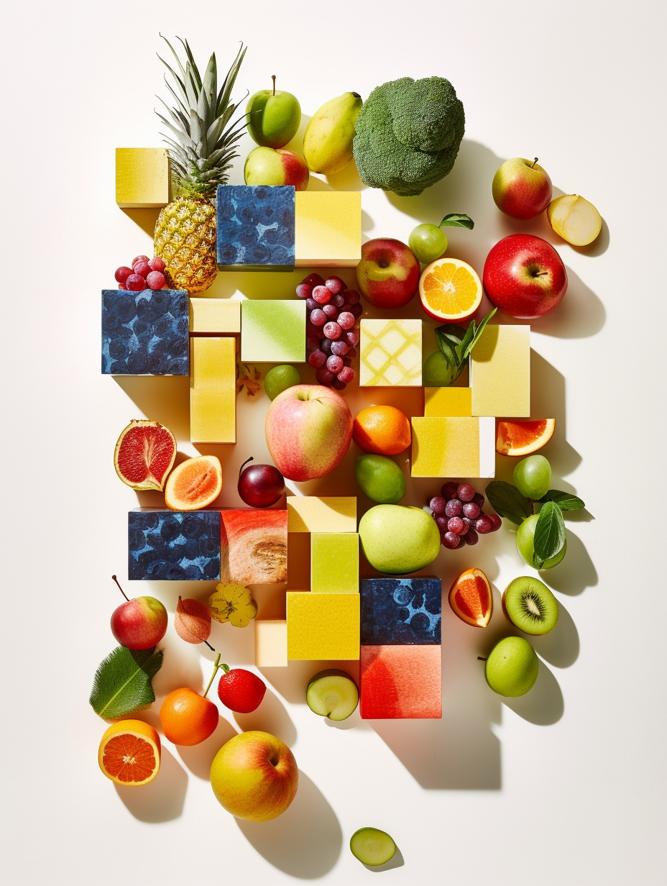
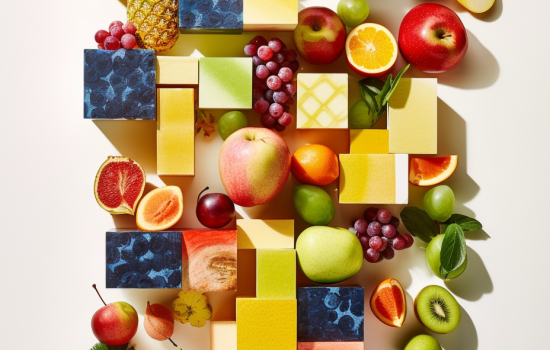
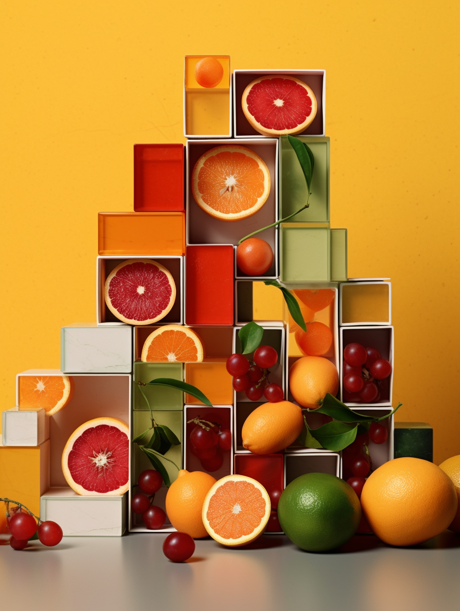
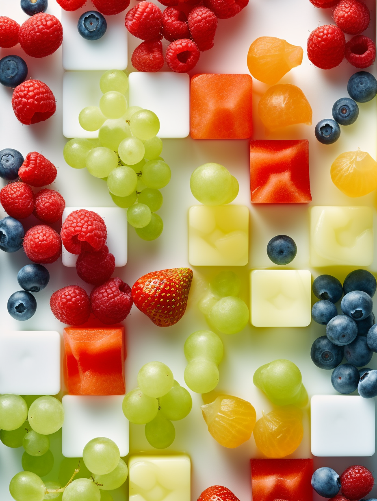
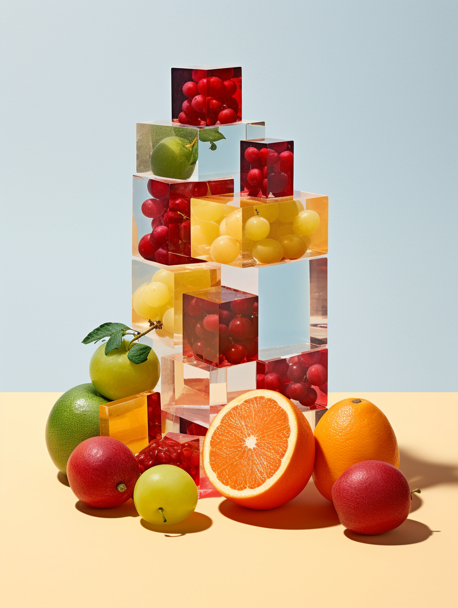
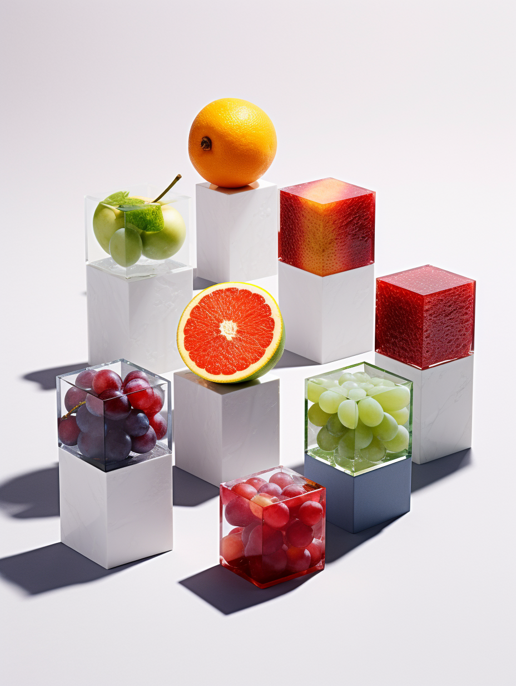
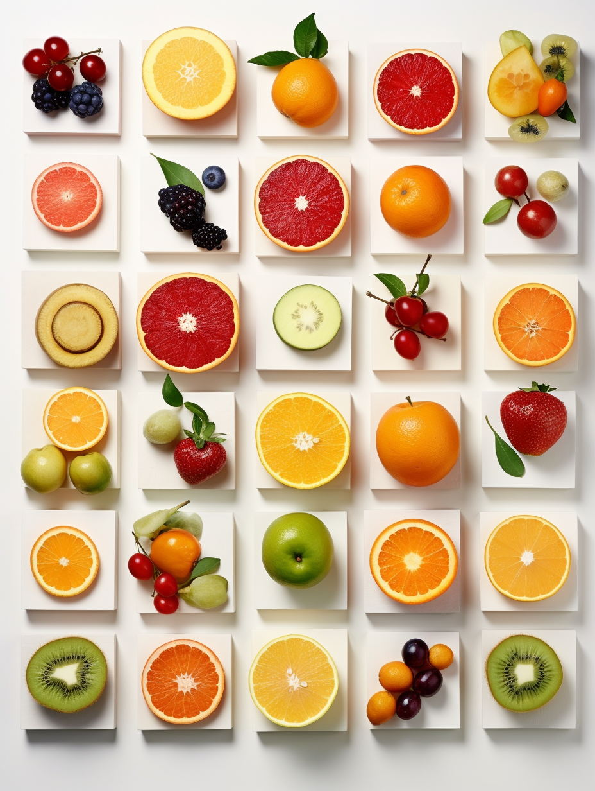
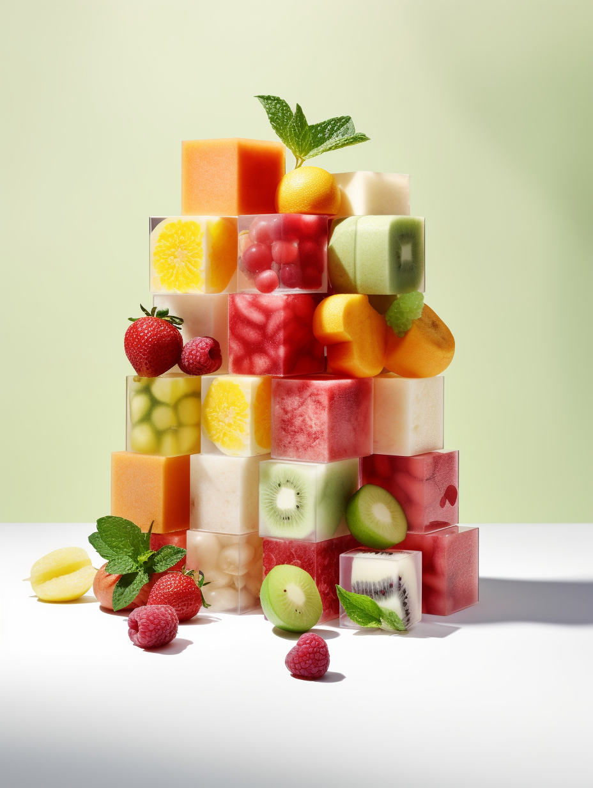
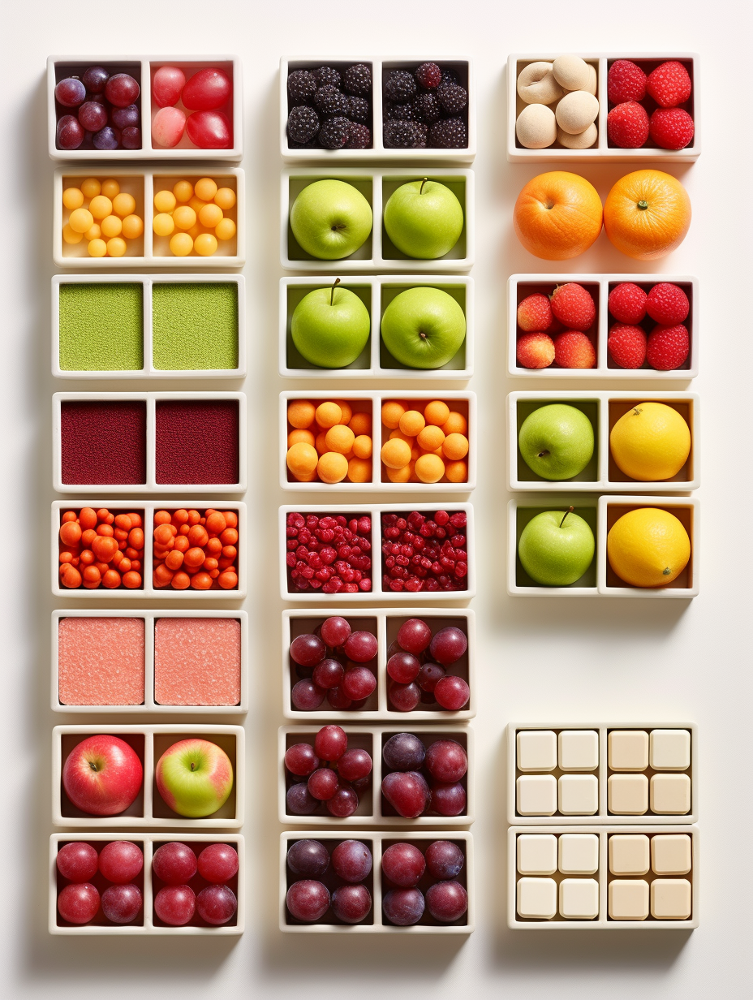
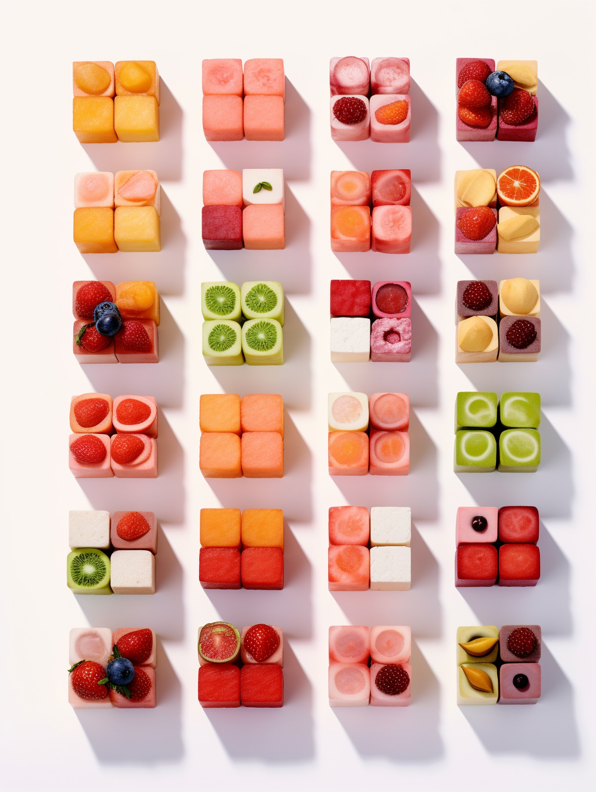
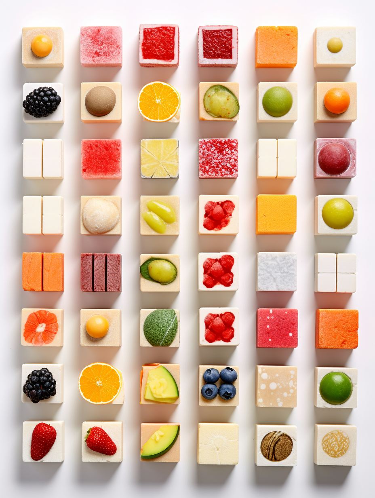
This product is a great way to enhance your website with Owl Carousel Two and Elevated Zoom. It provides a seamless integration and offers advanced zoom functionality for your carousel images.